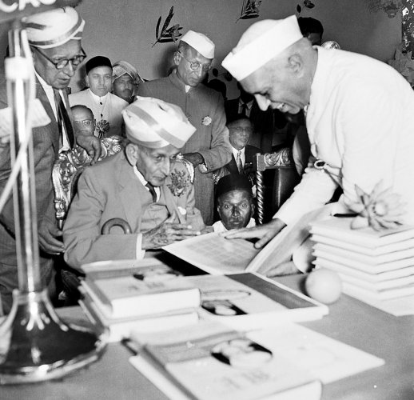

Assistant Engineer in Bombay, 1885; served in Nasik, Khandesh (mainly in Dhule) and Pune
(Poona)
Services lent to Municipality of Sukkur, Sind, in 1894; designed and carried out water
works for the Municipality
Executive Engineer, Surat, in 1896
Assistant Superintending Engineer, Pune (Poona), 1897–1899; visited China and Japan in 1898
Executive Engineer for Irrigation, Pune (Poona),in 1899
Sanitary Engineer, Bombay, and Member, Sanitary Board in 1901; gave evidence before Indian
Irrigation Commission
Designed and constructed automatic gates patented by him at Lake Fife Storage Reservoir;
introduced a new system of irrigation known as "Block System", 1903; represented Bombay
Government at Shimla Irrigation Commission, 1904; on special duty, 1905
Superintending Engineer,1907; visited Egypt, Canada, USA, and Russia, in 1908
Consulting Engineer to Hyderabad/Nizam State; supervised and carried out engineering works
on Musi river; Hyderabad floods of 1909
Retired from British Service,1909
Chief Engineer and Secretary to Government of Mysore,1909
Diwan of Mysore, PWD; and Railway,1913
Board of Directors of Tata Steel, 1927–1955

Honours And Awards
M.Visvesvaraya received India's highest honour,Bharat Ratna, in 1955.
Visvesvaraya was appointed a Companion of Order of the Indian Empire (CIE) in 1911
In 1915, while he was Diwan of Mysore, Visvesvaraya was knighted as Knight Commander of
Order of the Indian Empire (KCIE) by the British for his contributions to the public good
After India attained independence, he was awarded the nation's highest honor, Bharat Ratna,
in 1955,[25] an honorary membership of London Institution of Civil Engineers, a fellowship
from Indian Institute of Science (Bangalore), and several honorary degrees including D.Sc.,
LL.D., D.Litt. from eight universities in India
He was the president of the 1923 session of the Indian Science Congress. He is the most
popular person in Karnataka, according to newspaper Prajavani. On 15 September 2018, to
celebrate his 157th birthday, Visvesvaraya was honored with a Google Doodle.
The Knight Commander of The Indian Empire medal
Sir M.V. was honoured with honorary membership of the international Institution of Civil
Engineers (based in London) and a fellowship of the Indian Institute of Science (based in
Bangalore). He was also awarded several honorary doctoral degrees like D.Sc., LL.D., D.Litt.
from various universities in India. He was president of the 1923 Session of the Indian
Science Congress.
The centenary of the birth of Sir M.V. was celebrated in Lal Bagh in Bangalore. Prime
Minister Nehru flew down to Bangalore by a special plane to the greatest son of India. Sri
Jayachamaraja Wodiyar presided over the function.